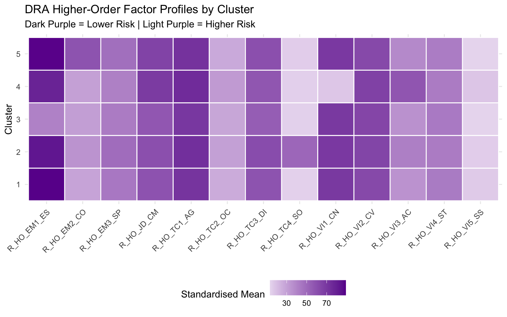
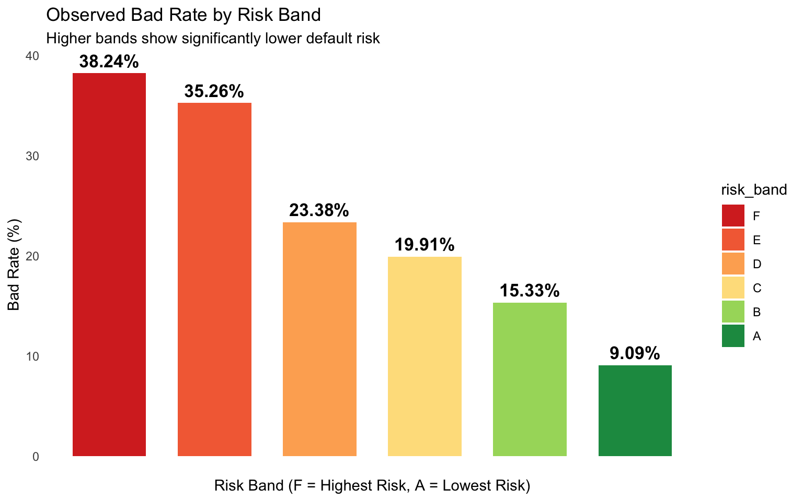

In the first phase of this project, we demonstrated the value of psychometric data as an alternative input for credit scoring, particularly in thin-file markets where traditional financial histories are limited. Using the same 13 higher-order factors, we evaluated five modelling approaches to determine which most effectively ranks credit risk.
Our findings showed that while traditional logistic regression provides a stable and interpretable baseline, more advanced ensemble methods offer improved predictive performance by capturing non-linear relationships and complex interactions between variables. These results highlight the potential for modern machine learning techniques to enhance credit risk assessment and improve applicant selection.
Conventional credit risk underwriting typically relies on linear models such as logistic and conditional logistic regression. These approaches are widely used due to their transparency and ease of interpretation, allowing financial institutions to clearly link individual predictors to outcomes. However, this simplicity may limit their ability to capture more complex behavioral patterns underlying credit risk.
Building on Phase 1, the aim of this analysis is to explore how different modelling approaches — ranging from traditional linear models to more dynamic machine learning techniques — capture variation in credit risk. In particular, the analysis seeks to assess whether advanced models can uncover hidden structures or interactions that improve the classification of credit outcomes.
Methods
To address this, we implement and compare a range of modelling techniques with increasing flexibility and complexity:
Conditional Logistic Regression: A traditional, interpretable baseline model commonly used in credit risk modelling.
Neural Network Model using Keras/TensorFlow package: A non-linear model capable of capturing complex interactions between predictors.
Clustering Techniques - Hierarchical Clustering & K-Means Clustering: Unsupervised approaches used to identify latent subgroups within the data that may exhibit different risk patterns.
XGBoost with Logistic Calibration Layer: A powerful ensemble method that models non-linearities and interactions, with an additional calibration step to produce interpretable probability estimates.
Data
This analysis uses real psychometric assessment data. The scores have been scaled such that risk reduces as the score increases. Additionally, the scores were mapped to a range of 0 to 100.
To protect intellectual property, the names of the DRA variables have been generalized or renamed in this public version. The underlying constructs and relationships remain representative of the actual assessment.
All financial data (accounts, arrears, age on book, bad outcome) is simulated to match realistic distributions, correlations, and patterns from the original analysis (based on a South African thin-file population). The bad outcome (default, bad = 1) was defined as ≥2 payments missed within 6 months, with an overall bad rate of 24.2% in the final population.
No real candidate or client information is included.
Analyses
Data Preparation
Data preparation and the modelling population were defined using the same procedures as in Phase 1. After exclusion criteria was applied and missing values dropped, the modelling population consisted of 13,136 records.
# Use the new clean arm64 environmentuse_condaenv(condaenv ="tf_env", conda ="/opt/anaconda3/bin/conda", required =TRUE)
Show code
modeling_data <- raw_data %>%# 1. No arrears at assessment (worst_arrears_assess == 0)filter(worst_arrears_assess ==0) %>%# 2. Not very credit active at assessment (≤ 4 accounts)filter(num_accounts_assess <=4) %>%# 3. Not very credit active at performance (≤ 5 accounts)filter(num_accounts_perf <=5) %>%# 4. Accounts old enough to observe repayment (≥ 3 months on book)filter(age_oldest_perf >=3) %>%# 5. Had some credit activity to evaluate (at least one account at assess OR perf)filter(num_accounts_assess >0| num_accounts_perf >0)modeling_data <- modeling_data %>%na.omit()
Show code
data <- modeling_data %>% dplyr::mutate(Dummy_ID =as.factor(Dummy_ID),product_type =as.factor(product_type))predictors_factor <-grep("^R_HO_", names(data), value =TRUE)financial_vars <-c("num_accounts_perf", "age_oldest_perf")all_predictors <-c(predictors_factor, financial_vars)
All models predicted the same binary default outcome (bad = 1 if ≥2 payments missed within 6 months) and were built using the same set of predictors, namely:
The 13 DRA higher-order factor scores.
Two traditional financial variables: Number of accounts at the bureau (num_accounts_perf) and age of oldest trade (age_oldest_perf) at the performance period.
Conditional Logistic Regression
Show code
# Matching on two continuous variables # num_accounts_perf: number of accounts opened # age_oldest_perf: age of accounts set.seed(123) m.out <-matchit(bad ~ num_accounts_perf + age_oldest_perf,data = data,method ="nearest", # 1:1 nearest neighbordistance ="mahalanobis", ratio =1) # 1 control per case# summary(m.out) # check balance and number of matchesmatched <-match.data(m.out)# this adds the "subclass" column
While conditional logistic regression was used to estimate within-strata effects after matching, predictive performance (AUC/Gini) was evaluated using models applied to an independent test set to ensure out-of-sample validity.
Direct evaluation of the conditional logistic regression model on the test set was not feasible, as the model relies on matched strata defined during the training phase. These strata are constructed based on pairwise matching across the full dataset and do not generalise to new, unseen observations. Applying the model to the test set would therefore require re-matching, which would reintroduce information from the test data and compromise the independence of the evaluation.
As a result, standard (unmatched) models were used for out-of-sample performance assessment, while conditional logistic regression was retained to examine within-strata differences among individuals with similar baseline risk profiles.
Machine Learning Algorithms for Credit Scoring
The data were split into training (70%) and test (30%) sets. All subsequent models were fitted on the training data, and performance was evaluated on the held-out test set.
Show code
# Train/test split (70/30)set.seed(42)trainIndex <-createDataPartition(data$bad, p =0.7, list =FALSE)train_data <- data[trainIndex, ]test_data <- data[-trainIndex, ]
Neural Network (MLP)
First, we implemented a feed-forward neural network (also known as a Multi-Layer Perceptron or MLP) using the keras3 package which runs on top of TensorFlow.
Prior to model training, all predictor variables were standardized using centering and scaling. This step is essential for neural networks, as they are sensitive to the magnitude and scale of input features. Without standardization, features with larger numerical ranges can dominate the learning process and slow down convergence.
After constructing a sequential neural network model, the model was trained using the Adam optimizer and binary cross-entropy loss. We used early stopping based on validation AUC to prevent over-fitting.
Show code
# ========================================================# Full Keras Neural Network Script - Reproducible Version# ========================================================set.seed(123) tf$random$set_seed(123) Sys.setenv(TF_DETERMINISTIC_OPS ="1") # ====================== DATA PREPARATION ======================# Scale features (very important for neural networks)preprocess <-preProcess(train_data[, all_predictors], method =c("center", "scale"))train_scaled <-predict(preprocess, train_data[, all_predictors])test_scaled <-predict(preprocess, test_data[, all_predictors])train_x <-as.matrix(train_scaled)test_x <-as.matrix(test_scaled)train_y <-as.numeric(train_data$bad)test_y <-as.numeric(test_data$bad)# ====================== BUILD THE NEURAL NETWORK ======================keras_model <-keras_model_sequential() %>%# Input + First hidden layerlayer_dense(units =64, activation ="relu", input_shape =ncol(train_x)) %>%layer_dropout(rate =0.3) %>%# Second hidden layerlayer_dense(units =32, activation ="relu") %>%layer_dropout(rate =0.3) %>%# Output layerlayer_dense(units =1, activation ="sigmoid")# Compile the modelkeras_model %>%compile(optimizer ="adam",loss ="binary_crossentropy",metrics =c("AUC"))summary(keras_model)
The Keras neural network achieved a Test AUC of 0.623 and a Gini coefficient of 24.7%.
Note on Reproducibility:
Keras/TensorFlow models involve an internal random number generator. Although we applied multiple reproducibility controls, minor run-to-run variations may still occur. This is a known characteristic of deep learning frameworks. All results presented represent a representative run under fixed seeding conditions.
Python Implementation (Equivalent Code)
For completeness and to demonstrate cross-language implementation, below is the equivalent neural network code using TensorFlow/Keras in Python.
Show code
# Python equivalent using TensorFlow/Keras# Note. This code is for illustration only and is not executed in this documentimport numpy as npimport pandas as pdfrom sklearn.preprocessing import StandardScalerfrom tensorflow import kerasfrom tensorflow.keras import layersimport tensorflow as tf# Set seeds for reproducibilitynp.random.seed(123)tf.random.set_seed(123)# ====================== DATA PREPARATION ======================# Assuming train_data and test_data are pandas DataFramespredictors = [col for col in train_data.columns if col.startswith('R_HO_')] +\ ['num_accounts_perf', 'age_oldest_perf']X_train = train_data[predictors].valuesX_test = test_data[predictors].valuesy_train = train_data['bad'].valuesy_test = test_data['bad'].values# Scale featuresscaler = StandardScaler()X_train_scaled = scaler.fit_transform(X_train)X_test_scaled = scaler.transform(X_test)# ====================== BUILD THE MODEL ======================model = keras.Sequential([ layers.Dense(64, activation='relu', input_shape=(X_train_scaled.shape[1],)), layers.Dropout(0.3), layers.Dense(32, activation='relu'), layers.Dropout(0.3), layers.Dense(1, activation='sigmoid')])model.compile( optimizer='adam', loss='binary_crossentropy', metrics=['AUC'])model.summary()# ====================== TRAIN THE MODEL ======================history = model.fit( X_train_scaled, y_train, epochs=100, batch_size=32, validation_split=0.2, callbacks=[ keras.callbacks.EarlyStopping( monitor='val_auc', patience=15, restore_best_weights=True, mode='max' ) ], verbose=1)# ====================== EVALUATE ======================test_pred_prob = model.predict(X_test_scaled).flatten()# AUC and Gini would be calculated here using sklearn or similarfrom sklearn.metrics import roc_auc_scoreauc_keras = roc_auc_score(y_test, test_pred_prob)gini_keras = (2* auc_keras -1) *100print(f"Test AUC: {auc_keras:.3f}")print(f"Test Gini: {gini_keras:.1f}%")
Clustering Techniques
Hierarchical Clustering
To gain deeper insight into the behavioral patterns captured by the DRA higher-order factor scores, we applied hierarchical clustering. This unsupervised technique groups borrowers into segments based on the similarity of their behavioral risk profiles, without using the default outcome (bad) during the clustering process.
Show code
# ================== HIERARCHICAL CLUSTERING ==================# Scale only the DRA factorsdra_scaled <-scale(train_data[, predictors_factor])# Hierarchical clusteringdist_matrix <-dist(dra_scaled, method ="euclidean")hc <-hclust(dist_matrix, method ="ward.D2")# Plot dendrogramplot(hc, main ="Hierarchical Clustering on DRA Higher-Order Factors", xlab ="", sub ="", cex =0.6)
The dendrogram visualizes the hierarchical structure of the borrowers based on their DRA profiles. The dendrogram shows several clear “jumps” in height, particularly around 5–6 clusters. After examining the dendrogram and considering interpretability and segment size balance, we decided to cut the tree at k = 5 clusters. This choice provided a good balance between granularity and sufficiently large behavioral segments.
Show code
# Cut into clusters (choose k based on dendrogram)train_data$cluster_hc <-cutree(hc, k =5)# Profile clusterscluster_table <- train_data %>%group_by(cluster_hc) %>%summarise(n =n(),pct =round(n()/nrow(train_data)*100, 1),bad_rate_pct =round(mean(bad)*100, 2),num_accounts_mean =round(mean(num_accounts_perf), 2),age_oldest_mean =round(mean(age_oldest_perf), 2) ) %>%arrange(cluster_hc)kable(cluster_table, caption ="Cluster Profile") %>%kable_styling(full_width =FALSE, bootstrap_options =c("striped", "hover"))
Cluster Profile
cluster_hc
n
pct
bad_rate_pct
num_accounts_mean
age_oldest_mean
1
6160
67.0
25.88
3.21
16.55
2
765
8.3
16.60
3.25
17.06
3
1042
11.3
28.69
3.23
16.97
4
281
3.1
24.56
3.19
17.25
5
948
10.3
15.19
3.25
16.15
After cutting the dendrogram at 5 clusters, we profiled each segment.
Key Insights from the Table:
Cluster 1 is by far the largest segment (67% of the sample) with a relatively high bad rate (25.9%).
Cluster 5 shows the lowest bad rate (15.2%), suggesting it contains lower-risk borrowers from a behavioral perspective.
Cluster 3 has the highest bad rate (28.7%), indicating a higher-risk behavioral profile.
The two financial variables (num_accounts_perf and age_oldest_perf) show relatively little variation across clusters. This suggests that the DRA higher-order factors are capturing behavioral differences that are largely independent of basic account history metrics.
Overall, the clustering reveals meaningful heterogeneity in default risk across behavioral segments, even though the traditional financial variables are quite similar. This supports the value of psychometric data in identifying distinct risk groups that may not be visible through traditional variables alone.
Note:
AUC and Gini are supervised metrics - they measure how well a model ranks individuals from low to high risk using a continuous probability score against the actual binary outcome (bad). Clustering is unsupervised i.e., we only used the DRA higher-order factor scores to group borrowers. Because there is no probability score or ranking, AUC/Gini cannot be computed directly.
Understanding what the clusters represent
To understand what each cluster actually represents behaviorally, we can look at the mean DRA factor scores per cluster. The heatmap below visualizes the standardized mean values of the 13 DRA higher-order factors across the five behavioural clusters identified by hierarchical clustering.
Because higher scores on the DRA correspond to lower credit risk:
Higher-than-average DRA score → more protective traits (lower risk)
Lower-than-average DRA score → less protective traits (higher risk)
Show code
# Detailed DRA profile per clustercluster_dra_profile <- train_data %>%group_by(cluster_hc) %>%summarise(n =n(),pct =round(n()/nrow(train_data)*100, 1),bad_rate =round(mean(bad), 4),across(starts_with("R_HO_"), ~round(mean(.), 3)) ) %>%arrange(cluster_hc)# Long format for visualisationprofile_long <- cluster_dra_profile %>%select(cluster_hc, starts_with("R_HO_")) %>%pivot_longer(cols =starts_with("R_HO_"),names_to ="DRA_Factor",values_to ="Mean_Value") ggplot(profile_long, aes(x = DRA_Factor, y =factor(cluster_hc), fill = Mean_Value)) +geom_tile(color ="white", linewidth =0.5) +scale_fill_gradient2(low ="red", high ="#6A1B9A", midpoint =0, name ="Standardised Mean") +labs(title ="DRA Higher-Order Factor Profiles by Cluster",subtitle ="Dark Purple = Lower Risk | Light Purple = Higher Risk",x ="", y ="Cluster") +theme_minimal() +theme(axis.text.x =element_text(angle =45, hjust =1),legend.position ="bottom")

Cluster 5 shows dark purple across most factors, indicating borrowers in this group exhibit low behavioral risk overall. This cluster also had the lowest observed bad rate (15.2%). Cluster 3 displays the highest-risk profile, with notably lighter shades.
Python Implementation (Equivalent Code)
Show code
# Python equivalent: Hierarchical Clustering + Cluster Profile Table# (For illustration only - not executed in the Quarto document)import pandas as pdfrom sklearn.preprocessing import StandardScalerfrom scipy.cluster.hierarchy import linkage, fcluster, dendrogramimport matplotlib.pyplot as plt# Assume train_data is a pandas DataFramedra_cols = [col for col in train_data.columns if col.startswith('R_HO_')]# Scale the DRA factorsscaler = StandardScaler()dra_scaled = scaler.fit_transform(train_data[dra_cols])# Perform hierarchical clustering (Ward's method)Z = linkage(dra_scaled, method='ward')# Plot dendrogramplt.figure(figsize=(12, 6))dendrogram(Z, truncate_mode='lastp', p=30, leaf_rotation=90)plt.title("Hierarchical Clustering Dendrogram - DRA Higher-Order Factors")plt.xlabel("Borrowers")plt.ylabel("Distance")plt.show()# Cut into 5 clustersclusters = fcluster(Z, t=5, criterion='maxclust')# Add cluster labels back to datatrain_data['cluster_hc'] = clusters# Create profile tableprofile = train_data.groupby('cluster_hc').agg( n=('cluster_hc', 'size'), pct=('cluster_hc', lambda x: round(len(x)/len(train_data)*100, 1)), bad_rate=('bad', 'mean'), num_accounts_mean=('num_accounts_perf', 'mean'), age_oldest_mean=('age_oldest_perf', 'mean')).round(4)# Add mean of each DRA factordra_means = train_data.groupby('cluster_hc')[dra_cols].mean().round(3)profile = pd.concat([profile, dra_means], axis=1)print(profile)
K-Means Clustering
Following the hierarchical clustering, we applied K-means clustering as a complementary partitioning method. Unlike hierarchical clustering, K-means is a non-hierarchical algorithm that assigns each borrower to exactly one of k clusters by minimizing the within-cluster variance.
As with the hierarchical approach, clustering was performed exclusively on the 13 standardized DRA higher-order factor scores to identify distinct behavioural risk profiles.
Show code
# ================== K-MEANS CLUSTERING ==================set.seed(123)# Elbow + Silhouette to help choose kfviz_nbclust(dra_scaled, kmeans, method ="wss")
The K-means algorithm identified five distinct behavioral segments with substantially different risk levels:
Cluster 2 represents the lowest-risk group, with the lowest bad rate of 13.65%.
Cluster 1 is the second-largest segment and shows a moderate bad rate of 21.82%.
Clusters 3 and 5 are the highest-risk groups, with bad rates of 28.02% and 28.71% respectively. Together they represent over 51% of the sample.
Cluster 4 is small (3.0%) but carries relatively high risk (24.36% bad rate).
As observed in the hierarchical clustering, the traditional financial variables show very little variation across the K-means clusters. This further confirms that the DRA higher-order factors are capturing important behavioral differences that are largely independent of traditional metrics. The spread in bad rates (from 13.65% in the best cluster to 28.71% in the worst) demonstrates that behavioral segmentation using psychometric scores can effectively differentiate credit risk, providing valuable insights for targeted risk management strategies.
Python Implementation (Equivalent Code)
Show code
# Python equivalent: K-means Clustering + Profile Table# (For illustration only - not executed in the Quarto document)import pandas as pdimport numpy as npfrom sklearn.preprocessing import StandardScalerfrom sklearn.cluster import KMeansimport matplotlib.pyplot as pltfrom yellowbrick.cluster import KElbowVisualizer# Assume train_data is a pandas DataFramedra_cols = [col for col in train_data.columns if col.startswith('R_HO_')]# Scale the featuresscaler = StandardScaler()dra_scaled = scaler.fit_transform(train_data[dra_cols])# Elbow methodmodel = KMeans(random_state=123)visualizer = KElbowVisualizer(model, k=(1, 11))visualizer.fit(dra_scaled)visualizer.show()# Final K-means with k=5kmeans = KMeans(n_clusters=5, n_init=25, random_state=123)train_data['cluster_kmeans'] = kmeans.fit_predict(dra_scaled)# Create profile tableprofile = train_data.groupby('cluster_kmeans').agg( n=('cluster_kmeans', 'size'), pct=('cluster_kmeans', lambda x: round(len(x)/len(train_data)*100, 1)), bad_rate=('bad', 'mean'), num_accounts_mean=('num_accounts_perf', 'mean'), age_oldest_mean=('age_oldest_perf', 'mean')).round(4)print(profile)
XGBoost (eXtreme Gradient Boosting)
Step 1: Retrain XGBoost on Combined Features
In the first phase of this project, we trained an XGBoost model using the 13 DRA higher-order factor scores to predict the binary default outcome (bad = 1 if the borrower missed ≥2 payments). XGBoost is a powerful gradient boosting algorithm which builds an ensemble of decision trees sequentially, where each new tree corrects the errors of the previous ones.
In the second phase, we extended the model by incorporating two key traditional financial variables: number of accounts opened (num_accounts_perf) and age of the oldest account (age_oldest_perf).
The XGBoost model (DRA higher-order factors + financial variables) achieved a Test AUC of 0.663 and Gini of 32.5% outperforming the neural network in terms of discriminatory power. An AUC of 0.663 means the model ranks a randomly chosen defaulter higher than a randomly chosen non-defaulter about 66.3% of the time.
Step 2: Understanding the Model with SHAP
SHAP (SHapley Additive exPlanations) assigns each feature an importance value for every individual prediction. It tells us which factors actually matter, and also how each variable pushes a specific borrower’s predicted default probability up or down. This makes the “black-box” XGBoost model much more transparent.
Each dot represents one person in the test dataset.
The horizontal position (SHAP value) shows how much that variable pushed the model’s prediction of default risk up (right) or down (left).
The colour tells you the person’s actual score on that variable: red/orange = high score, purple/blue = low score.
Note:
The variables are ranked from most important (top) to least important (bottom) based on how much they improve the model’s predictions. Because higher DRA scores mean lower credit risk, the plot shows that low DRA scores (purple/blue dots) push the predicted default risk up (right side), while high DRA scores (red/orange dots) push the predicted default risk down (left side).
The graph shows that several DRA higher-order factors rank among the top contributors, confirming their value in explaining default behavior beyond traditional financial metrics.
Step 3: Logistic Calibration Layer
After developing the XGBoost model, we applied a logistic calibration layer. This is a widely used hybrid modelling technique in credit risk that balances the strong predictive power of machine learning with the interpretability of traditional logistic regression.
What is the Calibration Layer and Why Do We Use It?
The XGBoost model excels at capturing complex non-linear relationships and interactions between variables, but its raw output probabilities are often poorly calibrated (i.e., a predicted probability of 0.20 may not correspond to an actual 20% default rate). The calibration layer addresses this by taking the XGBoost predicted probability (xgb_full_pred_prob) as input and fitting a simple logistic regression on the test data.
Show code
# Logistic regression using XGBoost predicted probability as the main predictor calib_model <-glm(bad ~ xgb_full_pred_prob, data = test_data, family =binomial(link ="logit"))# Shows the calibrated coefficient - tells us how strongly the XGBoost score drives the final default probability. model_summary <-tidy(calib_model, conf.int =TRUE) model_beta <-lm.beta(calib_model) beta_values <-coef(model_beta)[-1]calib_table <-data.frame(Predictor = model_summary$term,b = model_summary$estimate,SE = model_summary$std.error,"95% CI"=paste0("[", round(model_summary$conf.low, 3), ", ", round(model_summary$conf.high, 3), "]"),p =ifelse(model_summary$p.value <0.001, "< 0.001", round(model_summary$p.value, 3)),Beta =c(NA, beta_values))kable(calib_table, digits =3, col.names =c("Predictor", "b", "SE", "95% CI", "p", "Beta"),caption ="Calibrated Logistic Regression Results",row.names =FALSE) %>%kable_styling(full_width =FALSE, bootstrap_options =c("striped", "hover"))
Calibrated Logistic Regression Results
Predictor
b
SE
95% CI
p
Beta
(Intercept)
-2.543
0.108
[-2.757, -2.333]
< 0.001
NA
xgb_full_pred_prob
5.455
0.379
[4.715, 6.2]
< 0.001
1.25
Because the final output comes from a logistic regression model, we can now generate traditional, easily interpretable metrics that stakeholders are familiar with, while still benefiting from the superior discriminatory power of the upstream XGBoost model.
One of the most useful traditional metrics is the odds ratio for the XGBoost score:
Show code
# Odds ratio for the XGBoost scoreexp(coef(calib_model))
The logistic calibration layer confirms that the XGBoost-derived score is a very powerful predictor of default. Specifically, the logistic regression shows a large and highly significant coefficient for the XGBoost predicted probability (odds ratio ≈ 234). This means that borrowers with higher XGBoost-predicted probabilities of default have substantially higher odds of actually defaulting.
For the final scorecard, we applied an inversion during the PDO scaling process so that higher-risk borrowers receive lower scores, consistent with the standard convention in credit scoring (where a higher score indicates lower risk).
Show code
# Generate calibrated probabilities test_data$calibrated_pd <-predict(calib_model, type ="response")# Evaluate the final calibrated modelpred_obj_calib <-prediction(test_data$calibrated_pd, test_data$bad)auc_calib <-performance(pred_obj_calib, "auc")@y.values[[1]]gini_calib <- (2* auc_calib -1) *100cat(sprintf("Calibrated Logistic (after XGBoost) Test AUC: %.3f | Gini: %.1f%%\n", auc_calib, gini_calib))
Calibrated Logistic (after XGBoost) Test AUC: 0.663 | Gini: 32.5%
The calibrated model maintains the same discriminatory power (AUC 0.663, Gini 32.5%) as the original XGBoost because the logistic calibration applies a monotonic transformation that preserves ranking order while improving probability calibration.
After calibrating the XGBoost predictions through a logistic regression layer, we transformed the calibrated probabilities into a practical credit scorecard by applying a standard PDO (Points to Double the Odds) scaling technique.
PDO defines how many additional score points are required to double the odds of a borrower being “good” (non-defaulting) and is one of the most widely used techniques in traditional credit scorecard development. The scaling formula was inverted so that higher risk borrowers receive lower scores.
We then divided the score distribution into six risk bands (A to F) using quantile-based cut points. This ensures each band contains a similar proportion of the population while maintaining a clear risk ordering.
Show code
# ====================== FIXED SCORE SCALING ======================pdo <-20base_score <-600base_odds <-50factor <- pdo /log(2)offset <- base_score - (factor *log(base_odds))# Create log-oddstest_data$log_odds <-log(test_data$calibrated_pd / (1- test_data$calibrated_pd))# Invert the sign so higher risk → LOWER score ===test_data$final_score <-round(offset - factor * test_data$log_odds)n_bands <-6test_data$risk_band <-cut(test_data$final_score,breaks =quantile(test_data$final_score, probs =seq(0, 1, length.out = n_bands +1)),labels =c("F", "E", "D", "C", "B", "A"), # Lowest score = F (high risk)include.lowest =TRUE,right =TRUE)# Mean_PD: Average calibrated probability of default (PD) in that band (Should decrease from F to A). # ====================== PROFILE THE BANDS ======================band_profile <- test_data %>%group_by(risk_band) %>%summarise(Count =n(),Percent =round(n() /nrow(test_data) *100, 1),Mean_Score =round(mean(final_score), 1),Mean_PD =round(mean(calibrated_pd), 4),Bad_Rate =round(mean(bad), 4),Bad_Rate_Pct =round(mean(bad) *100, 2),.groups ="drop" ) %>%arrange(risk_band) kable( band_profile,digits =1,caption ="Risk Bands (Test Data)") %>%kable_styling(full_width =FALSE, bootstrap_options =c("striped", "hover"))
Risk Bands (Test Data)
risk_band
Count
Percent
Mean_Score
Mean_PD
Bad_Rate
Bad_Rate_Pct
F
693
17.6
496.6
0.4
0.4
38.2
E
675
17.1
511.9
0.3
0.4
35.3
D
663
16.8
523.3
0.2
0.2
23.4
C
648
16.4
529.0
0.2
0.2
19.9
B
711
18.0
535.0
0.2
0.2
15.3
A
550
14.0
543.0
0.1
0.1
9.1
The risk bands demonstrate excellent separation of risk levels. Borrowers in Band F (highest risk) have an observed bad rate of 38.2%, while those in Band A (lowest risk) have a much lower bad rate of 9.1%. This represents more than a 4-fold difference in default risk between the best and worst bands.
Key observations:
There is a clear monotonic decrease in both predicted PD (probability of default) and actual bad rate as we move from Band F to Band A.
Mean scorecard points increase steadily from 497 in Band F to 543 in Band A.
The bands are relatively balanced in size (ranging from 14% to 18% of the test population), which supports stable and fair application across the portfolio.
Show code
ggplot(band_profile, aes(x = risk_band, y = Bad_Rate_Pct, fill = risk_band)) +geom_col(width =0.7) +geom_text(aes(label =paste0(Bad_Rate_Pct, "%")), vjust =-0.5, size =4.5, fontface ="bold") +scale_fill_manual(values =c("F"="#d73027", "E"="#f46d43", "D"="#fdae61","C"="#fee08b", "B"="#a6d96a", "A"="#1a9850")) +labs(title ="Observed Bad Rate by Risk Band",subtitle ="Higher bands show significantly lower default risk",x ="Risk Band (F = Highest Risk, A = Lowest Risk)",y ="Bad Rate (%)") +theme_minimal() +theme(axis.text.x =element_blank(),panel.grid =element_blank() )

This scorecard format transforms the sophisticated XGBoost and calibration model into an easy-to-understand and operationally usable tool. Lenders can now apply simple rules such as:
Bands A & B: Low risk (suitable for automatic approval or preferential pricing)
Bands C & D: Medium risk (may require manual review)
Bands E & F: High risk (higher scrutiny, restricted lending, or collections focus)
The combination of strong underlying model performance (AUC 0.663; Gini 32.5%) with transparent, banded risk grades makes this hybrid approach particularly valuable for both predictive accuracy and practical implementation.
References
Roland, A. (2025). Machine learning for credit scoring and loan default prediction using behavioral and transactional financial data. World Journal of Advanced Research and Reviews, 26(3), 884-904. https://doi.org/10.30574/wjarr.2025.26.3.2266
Source Code
---title: "Evolution of Credit Scoring"authors: Caitlin Buenk, Tilabo Williamson, and Jurgen Becker (Project Lead) - AX Consult Group. format: html: theme: cosmo code-fold: true code-summary: "Show code" code-tools: true toc: true toc-depth: 3 fig-width: 8 fig-height: 5 output-dir: docs---::: {.text-center style="margin-bottom: 2em;"}{width="180" fig-align="center"}:::### Background and Aim In the first phase of this project, we demonstrated the value of psychometric data as an alternative input for credit scoring, particularly in thin-file markets where traditional financial histories are limited. Using the same 13 higher-order factors, we evaluated five modelling approaches to determine which most effectively ranks credit risk.Our findings showed that while traditional logistic regression provides a stable and interpretable baseline, more advanced ensemble methods offer improved predictive performance by capturing non-linear relationships and complex interactions between variables. These results highlight the potential for modern machine learning techniques to enhance credit risk assessment and improve applicant selection.Conventional credit risk underwriting typically relies on linear models such as logistic and conditional logistic regression. These approaches are widely used due to their transparency and ease of interpretation, allowing financial institutions to clearly link individual predictors to outcomes. However, this simplicity may limit their ability to capture more complex behavioral patterns underlying credit risk. Building on Phase 1, the aim of this analysis is to explore how different modelling approaches — ranging from traditional linear models to more dynamic machine learning techniques — capture variation in credit risk. In particular, the analysis seeks to assess whether advanced models can uncover hidden structures or interactions that improve the classification of credit outcomes.### MethodsTo address this, we implement and compare a range of modelling techniques with increasing flexibility and complexity: 1. Conditional Logistic Regression: A traditional, interpretable baseline model commonly used in credit risk modelling.2. Neural Network Model using Keras/TensorFlow package: A non-linear model capable of capturing complex interactions between predictors.3. Clustering Techniques - Hierarchical Clustering & K-Means Clustering: Unsupervised approaches used to identify latent subgroups within the data that may exhibit different risk patterns. 4. XGBoost with Logistic Calibration Layer: A powerful ensemble method that models non-linearities and interactions, with an additional calibration step to produce interpretable probability estimates.### DataThis analysis uses real **psychometric assessment data**. The scores have been scaled such that risk reduces as the score increases. Additionally, the scores were mapped to a range of 0 to 100.To protect intellectual property, the names of the DRA variables have been generalized or renamed in this public version. The underlying constructs and relationships remain representative of the actual assessment.**All financial data** (accounts, arrears, age on book, bad outcome) is simulated to match realistic distributions, correlations, and patterns from the original analysis (based on a South African thin-file population). The bad outcome (default, bad = 1) was defined as ≥2 payments missed within 6 months, with an overall bad rate of 24.2% in the final population.No real candidate or client information is included.### Analyses **Data Preparation** Data preparation and the modelling population were defined using the same procedures as in Phase 1. After exclusion criteria was applied and missing values dropped, the modelling population consisted of 13,136 records. ```{r}library(pacman)Sys.setenv(TF_CPP_MIN_LOG_LEVEL ="3") p_load(dplyr, readxl, writexl, ggplot2, tidyr, lavaan, psych, tidyverse, knitr, ggcorrplot, jtools, Hmisc, rempsyc, RColorBrewer, smotefamily, caret, pROC, themis, recipes, yardstick, randomForest, copula, reshape2, stringr, ROCR, xgboost, shapviz, e1071, kableExtra, SuperLearner, lm.beta, broom, pdp, MatchIt, survival, lmtest, reticulate, keras3, tensorflow, cluster, factoextra) raw_data <- readxl::read_excel("DRA_with_simulated_credit.xlsx")``````{r message = FALSE}# Use the new clean arm64 environmentuse_condaenv(condaenv ="tf_env", conda ="/opt/anaconda3/bin/conda", required =TRUE)``````{r}modeling_data <- raw_data %>%# 1. No arrears at assessment (worst_arrears_assess == 0)filter(worst_arrears_assess ==0) %>%# 2. Not very credit active at assessment (≤ 4 accounts)filter(num_accounts_assess <=4) %>%# 3. Not very credit active at performance (≤ 5 accounts)filter(num_accounts_perf <=5) %>%# 4. Accounts old enough to observe repayment (≥ 3 months on book)filter(age_oldest_perf >=3) %>%# 5. Had some credit activity to evaluate (at least one account at assess OR perf)filter(num_accounts_assess >0| num_accounts_perf >0)modeling_data <- modeling_data %>%na.omit()``````{r}data <- modeling_data %>% dplyr::mutate(Dummy_ID =as.factor(Dummy_ID),product_type =as.factor(product_type))predictors_factor <-grep("^R_HO_", names(data), value =TRUE)financial_vars <-c("num_accounts_perf", "age_oldest_perf")all_predictors <-c(predictors_factor, financial_vars) ```All models predicted the same binary default outcome (bad = 1 if ≥2 payments missed within 6 months) and were built using the same set of predictors, namely:- The 13 DRA higher-order factor scores.- Two traditional financial variables: Number of accounts at the bureau (num_accounts_perf) and age of oldest trade (age_oldest_perf) at the performance period. #### Conditional Logistic Regression```{r}# Matching on two continuous variables # num_accounts_perf: number of accounts opened # age_oldest_perf: age of accounts set.seed(123) m.out <-matchit(bad ~ num_accounts_perf + age_oldest_perf,data = data,method ="nearest", # 1:1 nearest neighbordistance ="mahalanobis", ratio =1) # 1 control per case# summary(m.out) # check balance and number of matchesmatched <-match.data(m.out)# this adds the "subclass" column``````{r}# Create formula with all 13 higher-order factorsformula_clogit <-as.formula(paste("bad ~", paste(predictors_factor, collapse =" + "), "+ strata(subclass)"))# Fit modellog_model <-clogit(formula_clogit, data = matched)model_summary <-tidy(log_model, conf.int =TRUE) log_table <-data.frame(Predictor = model_summary$term,b = model_summary$estimate,SE = model_summary$std.error,"95% CI"=paste0("[", round(model_summary$conf.low, 3), ", ", round(model_summary$conf.high, 3), "]"),p =ifelse(model_summary$p.value <0.001, "< 0.001", round(model_summary$p.value, 3)))kable(log_table, digits =3, col.names =c("Predictor", "b", "SE", "95% CI", "p"),caption ="Conditional Logistic Regression Results",row.names =FALSE) %>%kable_styling(full_width =FALSE, bootstrap_options =c("striped", "hover"))``````{r}# Pseudo-R² for incremental explanatory powerpseudo_r2 <-1- (log_model$loglik[2] / log_model$loglik[1])cat("DRA higher-order factors explains", round(pseudo_r2 *100, 2), "% additional pseudo-variance.\n")```While conditional logistic regression was used to estimate within-strata effects after matching, predictive performance (AUC/Gini) was evaluated using models applied to an independent test set to ensure out-of-sample validity.Direct evaluation of the conditional logistic regression model on the test set was not feasible, as the model relies on matched strata defined during the training phase. These strata are constructed based on pairwise matching across the full dataset and do not generalise to new, unseen observations. Applying the model to the test set would therefore require re-matching, which would reintroduce information from the test data and compromise the independence of the evaluation.As a result, standard (unmatched) models were used for out-of-sample performance assessment, while conditional logistic regression was retained to examine within-strata differences among individuals with similar baseline risk profiles.### Machine Learning Algorithms for Credit Scoring The data were split into training (70%) and test (30%) sets. All subsequent models were fitted on the training data, and performance was evaluated on the held-out test set.```{r}# Train/test split (70/30)set.seed(42)trainIndex <-createDataPartition(data$bad, p =0.7, list =FALSE)train_data <- data[trainIndex, ]test_data <- data[-trainIndex, ]```### Neural Network (MLP)First, we implemented a feed-forward neural network (also known as a Multi-Layer Perceptron or MLP) using the keras3 package which runs on top of TensorFlow. Prior to model training, all predictor variables were standardized using centering and scaling. This step is essential for neural networks, as they are sensitive to the magnitude and scale of input features. Without standardization, features with larger numerical ranges can dominate the learning process and slow down convergence.After constructing a sequential neural network model, the model was trained using the Adam optimizer and binary cross-entropy loss. We used early stopping based on validation AUC to prevent over-fitting.```{r}#| message: false#| warning: false# ========================================================# Full Keras Neural Network Script - Reproducible Version# ========================================================set.seed(123) tf$random$set_seed(123) Sys.setenv(TF_DETERMINISTIC_OPS ="1") # ====================== DATA PREPARATION ======================# Scale features (very important for neural networks)preprocess <-preProcess(train_data[, all_predictors], method =c("center", "scale"))train_scaled <-predict(preprocess, train_data[, all_predictors])test_scaled <-predict(preprocess, test_data[, all_predictors])train_x <-as.matrix(train_scaled)test_x <-as.matrix(test_scaled)train_y <-as.numeric(train_data$bad)test_y <-as.numeric(test_data$bad)# ====================== BUILD THE NEURAL NETWORK ======================keras_model <-keras_model_sequential() %>%# Input + First hidden layerlayer_dense(units =64, activation ="relu", input_shape =ncol(train_x)) %>%layer_dropout(rate =0.3) %>%# Second hidden layerlayer_dense(units =32, activation ="relu") %>%layer_dropout(rate =0.3) %>%# Output layerlayer_dense(units =1, activation ="sigmoid")# Compile the modelkeras_model %>%compile(optimizer ="adam",loss ="binary_crossentropy",metrics =c("AUC"))summary(keras_model)# ====================== TRAIN THE MODEL ======================history <-invisible(keras_model %>%fit(x = train_x,y = train_y,epochs =100,batch_size =32,validation_split =0.2,callbacks =list(callback_early_stopping(monitor ="val_auc",patience =15,restore_best_weights =TRUE,mode ="max" ) ),verbose =0))# Plot training historyplot(history)# ====================== EVALUATE ON TEST SET ======================test_data$keras_pred_prob <-predict(keras_model, test_x)[, 1]# Calculate performance metricspred_obj_keras <-prediction(test_data$keras_pred_prob, test_data$bad)auc_keras <-performance(pred_obj_keras, "auc")@y.values[[1]]gini_keras <- (2* auc_keras -1) *100cat("\n=== Keras Neural Network Results ===\n")cat(sprintf("Test AUC: %.3f\n", auc_keras))cat(sprintf("Test Gini: %.1f%%\n", gini_keras))```The Keras neural network achieved a Test AUC of 0.623 and a Gini coefficient of 24.7%.**Note on Reproducibility:**Keras/TensorFlow models involve an internal random number generator. Although we applied multiple reproducibility controls, minor run-to-run variations may still occur. This is a known characteristic of deep learning frameworks. All results presented represent a representative run under fixed seeding conditions. #### Python Implementation (Equivalent Code)For completeness and to demonstrate cross-language implementation, below is the equivalent neural network code using TensorFlow/Keras in Python. ```{python}#| eval: false# Python equivalent using TensorFlow/Keras# Note. This code is for illustration only and is not executed in this documentimport numpy as npimport pandas as pdfrom sklearn.preprocessing import StandardScalerfrom tensorflow import kerasfrom tensorflow.keras import layersimport tensorflow as tf# Set seeds for reproducibilitynp.random.seed(123)tf.random.set_seed(123)# ====================== DATA PREPARATION ======================# Assuming train_data and test_data are pandas DataFramespredictors = [col for col in train_data.columns if col.startswith('R_HO_')] +\ ['num_accounts_perf', 'age_oldest_perf']X_train = train_data[predictors].valuesX_test = test_data[predictors].valuesy_train = train_data['bad'].valuesy_test = test_data['bad'].values# Scale featuresscaler = StandardScaler()X_train_scaled = scaler.fit_transform(X_train)X_test_scaled = scaler.transform(X_test)# ====================== BUILD THE MODEL ======================model = keras.Sequential([ layers.Dense(64, activation='relu', input_shape=(X_train_scaled.shape[1],)), layers.Dropout(0.3), layers.Dense(32, activation='relu'), layers.Dropout(0.3), layers.Dense(1, activation='sigmoid')])model.compile( optimizer='adam', loss='binary_crossentropy', metrics=['AUC'])model.summary()# ====================== TRAIN THE MODEL ======================history = model.fit( X_train_scaled, y_train, epochs=100, batch_size=32, validation_split=0.2, callbacks=[ keras.callbacks.EarlyStopping( monitor='val_auc', patience=15, restore_best_weights=True, mode='max' ) ], verbose=1)# ====================== EVALUATE ======================test_pred_prob = model.predict(X_test_scaled).flatten()# AUC and Gini would be calculated here using sklearn or similarfrom sklearn.metrics import roc_auc_scoreauc_keras = roc_auc_score(y_test, test_pred_prob)gini_keras = (2* auc_keras -1) *100print(f"Test AUC: {auc_keras:.3f}")print(f"Test Gini: {gini_keras:.1f}%")```### Clustering Techniques #### Hierarchical ClusteringTo gain deeper insight into the behavioral patterns captured by the DRA higher-order factor scores, we applied hierarchical clustering. This unsupervised technique groups borrowers into segments based on the similarity of their behavioral risk profiles, without using the default outcome (bad) during the clustering process.```{r}# ================== HIERARCHICAL CLUSTERING ==================# Scale only the DRA factorsdra_scaled <-scale(train_data[, predictors_factor])# Hierarchical clusteringdist_matrix <-dist(dra_scaled, method ="euclidean")hc <-hclust(dist_matrix, method ="ward.D2")# Plot dendrogramplot(hc, main ="Hierarchical Clustering on DRA Higher-Order Factors", xlab ="", sub ="", cex =0.6)```The dendrogram visualizes the hierarchical structure of the borrowers based on their DRA profiles. The dendrogram shows several clear “jumps” in height, particularly around 5–6 clusters. After examining the dendrogram and considering interpretability and segment size balance, we decided to cut the tree at k = 5 clusters. This choice provided a good balance between granularity and sufficiently large behavioral segments.```{r}# Cut into clusters (choose k based on dendrogram)train_data$cluster_hc <-cutree(hc, k =5)# Profile clusterscluster_table <- train_data %>%group_by(cluster_hc) %>%summarise(n =n(),pct =round(n()/nrow(train_data)*100, 1),bad_rate_pct =round(mean(bad)*100, 2),num_accounts_mean =round(mean(num_accounts_perf), 2),age_oldest_mean =round(mean(age_oldest_perf), 2) ) %>%arrange(cluster_hc)kable(cluster_table, caption ="Cluster Profile") %>%kable_styling(full_width =FALSE, bootstrap_options =c("striped", "hover"))```After cutting the dendrogram at 5 clusters, we profiled each segment. **Key Insights from the Table:**- Cluster 1 is by far the largest segment (67% of the sample) with a relatively high bad rate (25.9%).- Cluster 5 shows the lowest bad rate (15.2%), suggesting it contains lower-risk borrowers from a behavioral perspective.- Cluster 3 has the highest bad rate (28.7%), indicating a higher-risk behavioral profile.The two financial variables (num_accounts_perf and age_oldest_perf) show relatively little variation across clusters. This suggests that the DRA higher-order factors are capturing behavioral differences that are largely independent of basic account history metrics.Overall, the clustering reveals meaningful heterogeneity in default risk across behavioral segments, even though the traditional financial variables are quite similar. This supports the value of psychometric data in identifying distinct risk groups that may not be visible through traditional variables alone. **Note:** AUC and Gini are supervised metrics - they measure how well a model ranks individuals from low to high risk using a continuous probability score against the actual binary outcome (bad). Clustering is unsupervised i.e., we only used the DRA higher-order factor scores to group borrowers. Because there is no probability score or ranking, AUC/Gini cannot be computed directly. **Understanding what the clusters represent** To understand what each cluster actually represents behaviorally, we can look at the mean DRA factor scores per cluster. The heatmap below visualizes the standardized mean values of the 13 DRA higher-order factors across the five behavioural clusters identified by hierarchical clustering. Because higher scores on the DRA correspond to lower credit risk:- Higher-than-average DRA score → more protective traits (lower risk)- Lower-than-average DRA score → less protective traits (higher risk)```{r}# Detailed DRA profile per clustercluster_dra_profile <- train_data %>%group_by(cluster_hc) %>%summarise(n =n(),pct =round(n()/nrow(train_data)*100, 1),bad_rate =round(mean(bad), 4),across(starts_with("R_HO_"), ~round(mean(.), 3)) ) %>%arrange(cluster_hc)# Long format for visualisationprofile_long <- cluster_dra_profile %>%select(cluster_hc, starts_with("R_HO_")) %>%pivot_longer(cols =starts_with("R_HO_"),names_to ="DRA_Factor",values_to ="Mean_Value") ggplot(profile_long, aes(x = DRA_Factor, y =factor(cluster_hc), fill = Mean_Value)) +geom_tile(color ="white", linewidth =0.5) +scale_fill_gradient2(low ="red", high ="#6A1B9A", midpoint =0, name ="Standardised Mean") +labs(title ="DRA Higher-Order Factor Profiles by Cluster",subtitle ="Dark Purple = Lower Risk | Light Purple = Higher Risk",x ="", y ="Cluster") +theme_minimal() +theme(axis.text.x =element_text(angle =45, hjust =1),legend.position ="bottom")```Cluster 5 shows dark purple across most factors, indicating borrowers in this group exhibit low behavioral risk overall. This cluster also had the lowest observed bad rate (15.2%). Cluster 3 displays the highest-risk profile, with notably lighter shades. #### Python Implementation (Equivalent Code)```{python}#| eval: false# Python equivalent: Hierarchical Clustering + Cluster Profile Table# (For illustration only - not executed in the Quarto document)import pandas as pdfrom sklearn.preprocessing import StandardScalerfrom scipy.cluster.hierarchy import linkage, fcluster, dendrogramimport matplotlib.pyplot as plt# Assume train_data is a pandas DataFramedra_cols = [col for col in train_data.columns if col.startswith('R_HO_')]# Scale the DRA factorsscaler = StandardScaler()dra_scaled = scaler.fit_transform(train_data[dra_cols])# Perform hierarchical clustering (Ward's method)Z = linkage(dra_scaled, method='ward')# Plot dendrogramplt.figure(figsize=(12, 6))dendrogram(Z, truncate_mode='lastp', p=30, leaf_rotation=90)plt.title("Hierarchical Clustering Dendrogram - DRA Higher-Order Factors")plt.xlabel("Borrowers")plt.ylabel("Distance")plt.show()# Cut into 5 clustersclusters = fcluster(Z, t=5, criterion='maxclust')# Add cluster labels back to datatrain_data['cluster_hc'] = clusters# Create profile tableprofile = train_data.groupby('cluster_hc').agg( n=('cluster_hc', 'size'), pct=('cluster_hc', lambda x: round(len(x)/len(train_data)*100, 1)), bad_rate=('bad', 'mean'), num_accounts_mean=('num_accounts_perf', 'mean'), age_oldest_mean=('age_oldest_perf', 'mean')).round(4)# Add mean of each DRA factordra_means = train_data.groupby('cluster_hc')[dra_cols].mean().round(3)profile = pd.concat([profile, dra_means], axis=1)print(profile)```#### K-Means ClusteringFollowing the hierarchical clustering, we applied K-means clustering as a complementary partitioning method. Unlike hierarchical clustering, K-means is a non-hierarchical algorithm that assigns each borrower to exactly one of k clusters by minimizing the within-cluster variance. As with the hierarchical approach, clustering was performed exclusively on the 13 standardized DRA higher-order factor scores to identify distinct behavioural risk profiles. ```{r warning = FALSE}# ================== K-MEANS CLUSTERING ==================set.seed(123)# Elbow + Silhouette to help choose kfviz_nbclust(dra_scaled, kmeans, method ="wss")# Run K-meanskmeans_result <-kmeans(dra_scaled, centers =5, nstart =50, algorithm ="Lloyd")train_data$cluster_kmeans <- kmeans_result$cluster# Profilek_means_table <- train_data %>%group_by(cluster_kmeans) %>%summarise(n =n(),pct =round(n()/nrow(train_data)*100, 1),bad_rate_pct =round(mean(bad)*100, 2),num_accounts_mean =round(mean(num_accounts_perf), 2),age_oldest_mean =round(mean(age_oldest_perf), 2) ) %>%arrange(bad_rate_pct)```**Determining the Optimal Number of Clusters** The plot shows a clear bend (elbow) around k = 4 to 6, after which the reduction in within-cluster variance slows down significantly.```{r}kable(k_means_table, caption ="K-Means Table") %>%kable_styling(full_width =FALSE, bootstrap_options =c("striped", "hover"))```**Cluster Profiles and Interpretation** The K-means algorithm identified five distinct behavioral segments with substantially different risk levels:- Cluster 2 represents the lowest-risk group, with the lowest bad rate of 13.65%.- Cluster 1 is the second-largest segment and shows a moderate bad rate of 21.82%.- Clusters 3 and 5 are the highest-risk groups, with bad rates of 28.02% and 28.71% respectively. Together they represent over 51% of the sample.- Cluster 4 is small (3.0%) but carries relatively high risk (24.36% bad rate).As observed in the hierarchical clustering, the traditional financial variables show very little variation across the K-means clusters. This further confirms that the DRA higher-order factors are capturing important behavioral differences that are largely independent of traditional metrics. The spread in bad rates (from 13.65% in the best cluster to 28.71% in the worst) demonstrates that behavioral segmentation using psychometric scores can effectively differentiate credit risk, providing valuable insights for targeted risk management strategies.#### Python Implementation (Equivalent Code)```{python}#| eval: false# Python equivalent: K-means Clustering + Profile Table# (For illustration only - not executed in the Quarto document)import pandas as pdimport numpy as npfrom sklearn.preprocessing import StandardScalerfrom sklearn.cluster import KMeansimport matplotlib.pyplot as pltfrom yellowbrick.cluster import KElbowVisualizer# Assume train_data is a pandas DataFramedra_cols = [col for col in train_data.columns if col.startswith('R_HO_')]# Scale the featuresscaler = StandardScaler()dra_scaled = scaler.fit_transform(train_data[dra_cols])# Elbow methodmodel = KMeans(random_state=123)visualizer = KElbowVisualizer(model, k=(1, 11))visualizer.fit(dra_scaled)visualizer.show()# Final K-means with k=5kmeans = KMeans(n_clusters=5, n_init=25, random_state=123)train_data['cluster_kmeans'] = kmeans.fit_predict(dra_scaled)# Create profile tableprofile = train_data.groupby('cluster_kmeans').agg( n=('cluster_kmeans', 'size'), pct=('cluster_kmeans', lambda x: round(len(x)/len(train_data)*100, 1)), bad_rate=('bad', 'mean'), num_accounts_mean=('num_accounts_perf', 'mean'), age_oldest_mean=('age_oldest_perf', 'mean')).round(4)print(profile)```### XGBoost (eXtreme Gradient Boosting)#### Step 1: Retrain XGBoost on Combined FeaturesIn the first phase of this project, we trained an XGBoost model using the 13 DRA higher-order factor scores to predict the binary default outcome (bad = 1 if the borrower missed ≥2 payments). XGBoost is a powerful gradient boosting algorithm which builds an ensemble of decision trees sequentially, where each new tree corrects the errors of the previous ones.In the second phase, we extended the model by incorporating two key traditional financial variables: number of accounts opened (num_accounts_perf) and age of the oldest account (age_oldest_perf).```{r}# Convert target train_data$bad <-as.numeric(as.character(train_data$bad))test_data$bad <-as.numeric(as.character(test_data$bad))# Matrices with all predictorstrain_matrix_full <-xgb.DMatrix(data =as.matrix(train_data[, all_predictors]),label = train_data$bad)test_matrix_full <-xgb.DMatrix(data =as.matrix(test_data[, all_predictors]),label = test_data$bad)# Same tuned paramsparams <-list(objective ="binary:logistic",eval_metric ="auc",eta =0.03,max_depth =4,subsample =0.8,colsample_bytree =0.8,min_child_weight =3,gamma =0.1,nthread = parallel::detectCores() -1,seed =123)# Train full modelxgb_full <-xgb.train(params = params,data = train_matrix_full,nrounds =1000,evals =list(train = train_matrix_full, test = test_matrix_full),early_stopping_rounds =50,verbose =0)# Predictionstest_data$xgb_full_pred_prob <-predict(xgb_full, test_matrix_full)pred_obj_full <-prediction(test_data$xgb_full_pred_prob, test_data$bad)auc_full <-performance(pred_obj_full, "auc")@y.values[[1]]gini_full <- (2* auc_full -1) *100cat(sprintf("Full XGBoost Test AUC: %.3f | Gini: %.1f%%\n", auc_full, gini_full))```The XGBoost model (DRA higher-order factors + financial variables) achieved a Test AUC of 0.663 and Gini of 32.5% outperforming the neural network in terms of discriminatory power. An AUC of 0.663 means the model ranks a randomly chosen defaulter higher than a randomly chosen non-defaulter about 66.3% of the time.#### Step 2: Understanding the Model with SHAPSHAP (SHapley Additive exPlanations) assigns each feature an importance value for every individual prediction. It tells us which factors actually matter, and also how each variable pushes a specific borrower’s predicted default probability up or down. This makes the “black-box” XGBoost model much more transparent.```{r}shap_explain <-shapviz( xgb_full,X =as.matrix(test_data[, all_predictors]), X_pred =as.matrix(test_data[, all_predictors]))SHAP_plot <-sv_importance(shap_explain, kind ="beeswarm", max_display =15 ) +geom_point(size =0.30, alpha =0.25) +ggtitle("How Each Variable Pushes Credit Risk Up or Down") +theme_minimal() +theme(panel.grid.major =element_blank(),panel.grid.minor =element_blank() )print(SHAP_plot)```**How to Interpret the SHAP Plot?**- Each **horizontal line** is one of the 15 variables.- Each **dot** represents one person in the test dataset.- The **horizontal position** (SHAP value) shows how much that variable pushed the model’s prediction of default risk **up** (right) or **down** (left).- The **colour** tells you the person’s actual score on that variable: **red/orange = high score**, **purple/blue = low score**.**Note:** The variables are ranked from most important (top) to least important (bottom) based on how much they improve the model’s predictions. Because higher DRA scores mean lower credit risk, the plot shows that low DRA scores (purple/blue dots) push the predicted default risk up (right side), while high DRA scores (red/orange dots) push the predicted default risk down (left side).The graph shows that several DRA higher-order factors rank among the top contributors, confirming their value in explaining default behavior beyond traditional financial metrics.#### Step 3: Logistic Calibration LayerAfter developing the XGBoost model, we applied a logistic calibration layer. This is a widely used hybrid modelling technique in credit risk that balances the strong predictive power of machine learning with the interpretability of traditional logistic regression.**What is the Calibration Layer and Why Do We Use It?**The XGBoost model excels at capturing complex non-linear relationships and interactions between variables, but its raw output probabilities are often poorly calibrated (i.e., a predicted probability of 0.20 may not correspond to an actual 20% default rate). The calibration layer addresses this by taking the XGBoost predicted probability (xgb_full_pred_prob) as input and fitting a simple logistic regression on the test data.```{r}# Logistic regression using XGBoost predicted probability as the main predictor calib_model <-glm(bad ~ xgb_full_pred_prob, data = test_data, family =binomial(link ="logit"))# Shows the calibrated coefficient - tells us how strongly the XGBoost score drives the final default probability. model_summary <-tidy(calib_model, conf.int =TRUE) model_beta <-lm.beta(calib_model) beta_values <-coef(model_beta)[-1]calib_table <-data.frame(Predictor = model_summary$term,b = model_summary$estimate,SE = model_summary$std.error,"95% CI"=paste0("[", round(model_summary$conf.low, 3), ", ", round(model_summary$conf.high, 3), "]"),p =ifelse(model_summary$p.value <0.001, "< 0.001", round(model_summary$p.value, 3)),Beta =c(NA, beta_values))kable(calib_table, digits =3, col.names =c("Predictor", "b", "SE", "95% CI", "p", "Beta"),caption ="Calibrated Logistic Regression Results",row.names =FALSE) %>%kable_styling(full_width =FALSE, bootstrap_options =c("striped", "hover"))```Because the final output comes from a logistic regression model, we can now generate traditional, easily interpretable metrics that stakeholders are familiar with, while still benefiting from the superior discriminatory power of the upstream XGBoost model.One of the most useful traditional metrics is the odds ratio for the XGBoost score:```{r}# Odds ratio for the XGBoost scoreexp(coef(calib_model)) ```The logistic calibration layer confirms that the XGBoost-derived score is a very powerful predictor of default. Specifically, the logistic regression shows a large and highly significant coefficient for the XGBoost predicted probability (odds ratio ≈ 234). This means that borrowers with higher XGBoost-predicted probabilities of default have substantially higher odds of actually defaulting.For the final scorecard, we applied an inversion during the PDO scaling process so that higher-risk borrowers receive lower scores, consistent with the standard convention in credit scoring (where a higher score indicates lower risk).```{r}# Generate calibrated probabilities test_data$calibrated_pd <-predict(calib_model, type ="response")# Evaluate the final calibrated modelpred_obj_calib <-prediction(test_data$calibrated_pd, test_data$bad)auc_calib <-performance(pred_obj_calib, "auc")@y.values[[1]]gini_calib <- (2* auc_calib -1) *100cat(sprintf("Calibrated Logistic (after XGBoost) Test AUC: %.3f | Gini: %.1f%%\n", auc_calib, gini_calib))```The calibrated model maintains the same discriminatory power (AUC 0.663, Gini 32.5%) as the original XGBoost because the logistic calibration applies a monotonic transformation that preserves ranking order while improving probability calibration.#### Step 4: Creating Score Bands (Scorecard Development)After calibrating the XGBoost predictions through a logistic regression layer, we transformed the calibrated probabilities into a practical credit scorecard by applying a standard PDO (Points to Double the Odds) scaling technique.PDO defines how many additional score points are required to double the odds of a borrower being “good” (non-defaulting) and is one of the most widely used techniques in traditional credit scorecard development. The scaling formula was inverted so that higher risk borrowers receive lower scores.We then divided the score distribution into six risk bands (A to F) using quantile-based cut points. This ensures each band contains a similar proportion of the population while maintaining a clear risk ordering.```{r}# ====================== FIXED SCORE SCALING ======================pdo <-20base_score <-600base_odds <-50factor <- pdo /log(2)offset <- base_score - (factor *log(base_odds))# Create log-oddstest_data$log_odds <-log(test_data$calibrated_pd / (1- test_data$calibrated_pd))# Invert the sign so higher risk → LOWER score ===test_data$final_score <-round(offset - factor * test_data$log_odds)n_bands <-6test_data$risk_band <-cut(test_data$final_score,breaks =quantile(test_data$final_score, probs =seq(0, 1, length.out = n_bands +1)),labels =c("F", "E", "D", "C", "B", "A"), # Lowest score = F (high risk)include.lowest =TRUE,right =TRUE)# Mean_PD: Average calibrated probability of default (PD) in that band (Should decrease from F to A). # ====================== PROFILE THE BANDS ======================band_profile <- test_data %>%group_by(risk_band) %>%summarise(Count =n(),Percent =round(n() /nrow(test_data) *100, 1),Mean_Score =round(mean(final_score), 1),Mean_PD =round(mean(calibrated_pd), 4),Bad_Rate =round(mean(bad), 4),Bad_Rate_Pct =round(mean(bad) *100, 2),.groups ="drop" ) %>%arrange(risk_band) kable( band_profile,digits =1,caption ="Risk Bands (Test Data)") %>%kable_styling(full_width =FALSE, bootstrap_options =c("striped", "hover"))```The risk bands demonstrate excellent separation of risk levels. Borrowers in Band F (highest risk) have an observed bad rate of 38.2%, while those in Band A (lowest risk) have a much lower bad rate of 9.1%. This represents more than a 4-fold difference in default risk between the best and worst bands.**Key observations:**- There is a clear monotonic decrease in both predicted PD (probability of default) and actual bad rate as we move from Band F to Band A.- Mean scorecard points increase steadily from 497 in Band F to 543 in Band A.- The bands are relatively balanced in size (ranging from 14% to 18% of the test population), which supports stable and fair application across the portfolio.```{r}ggplot(band_profile, aes(x = risk_band, y = Bad_Rate_Pct, fill = risk_band)) +geom_col(width =0.7) +geom_text(aes(label =paste0(Bad_Rate_Pct, "%")), vjust =-0.5, size =4.5, fontface ="bold") +scale_fill_manual(values =c("F"="#d73027", "E"="#f46d43", "D"="#fdae61","C"="#fee08b", "B"="#a6d96a", "A"="#1a9850")) +labs(title ="Observed Bad Rate by Risk Band",subtitle ="Higher bands show significantly lower default risk",x ="Risk Band (F = Highest Risk, A = Lowest Risk)",y ="Bad Rate (%)") +theme_minimal() +theme(axis.text.x =element_blank(),panel.grid =element_blank() )```This scorecard format transforms the sophisticated XGBoost and calibration model into an easy-to-understand and operationally usable tool. Lenders can now apply simple rules such as:- Bands A & B: Low risk (suitable for automatic approval or preferential pricing)- Bands C & D: Medium risk (may require manual review)- Bands E & F: High risk (higher scrutiny, restricted lending, or collections focus)The combination of strong underlying model performance (AUC 0.663; Gini 32.5%) with transparent, banded risk grades makes this hybrid approach particularly valuable for both predictive accuracy and practical implementation.#### References Roland, A. (2025). Machine learning for credit scoring and loan default prediction using behavioral and transactional financial data. World Journal of Advanced Research and Reviews, 26(3), 884-904. https://doi.org/10.30574/wjarr.2025.26.3.2266